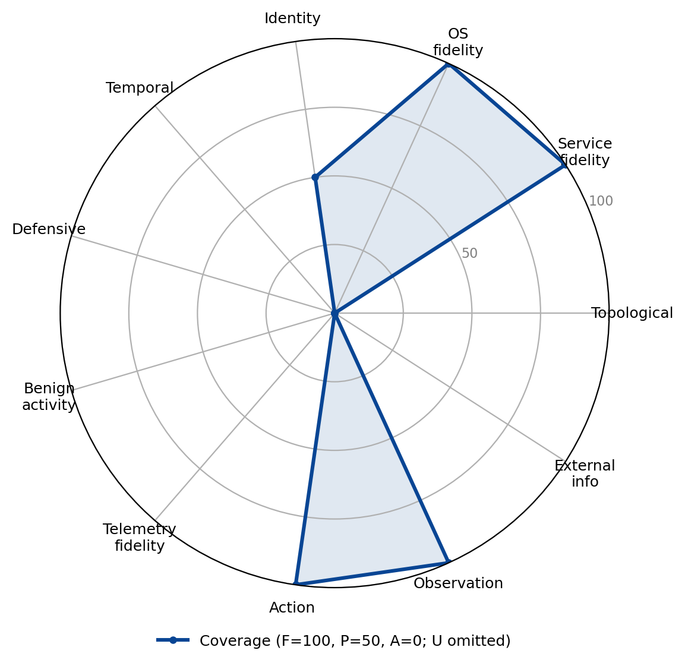

HTB
Family: Real-software emulator · Category: C

Hack The Box-style vulnerable-machine challenges on real hosts; strong real-software fidelity with little organizational or defender context.
Best suited for: Credential-based privilege escalation.
Dimension coverage
| Dimension | Coverage |
|---|---|
| Topological realism | Absent |
| Service fidelity | Full |
| OS fidelity | Full |
| Identity realism | Partial |
| Temporal dynamics | Absent |
| Defensive realism | Absent |
| Benign activity realism | Absent |
| Telemetry fidelity | Absent |
| Action realism | Full |
| Observation realism | Full |
| External information ecosystem | Absent |
Fit by objective
Suitability is a property of the (environment, objective) pair; a “not suitable” verdict names the dimension the objective needs that this environment abstracts.
| Objective | Verdict | Why |
|---|---|---|
| Targeted data exfiltration | Not suitable | does not provide Topological realism, Temporal dynamics, Defensive realism, Benign activity realism, Telemetry fidelity, External information ecosystem, dimensions this objective treats as critical |
| Ransomware deployment | Not suitable | does not provide Topological realism, Temporal dynamics, Defensive realism, Telemetry fidelity, dimensions this objective treats as critical |
| Worm / self-propagation | Not suitable | does not provide Topological realism, Temporal dynamics, dimensions this objective treats as critical |
| Credential-based privilege escalation | Suitable | covers the dimensions this objective requires |
| Evasive red-team operation | Not suitable | does not provide Topological realism, Temporal dynamics, Defensive realism, Benign activity realism, Telemetry fidelity, dimensions this objective treats as critical |
| Alert triage | Not suitable | does not provide Temporal dynamics, Defensive realism, Benign activity realism, Telemetry fidelity, dimensions this objective treats as critical |
| Incident response | Not suitable | does not provide Topological realism, Temporal dynamics, Defensive realism, Benign activity realism, Telemetry fidelity, dimensions this objective treats as critical |
| Threat hunting | Not suitable | does not provide Temporal dynamics, Defensive realism, Benign activity realism, Telemetry fidelity, dimensions this objective treats as critical |
| Attacker-defender simulation | Not suitable | does not provide Topological realism, Temporal dynamics, Defensive realism, Benign activity realism, Telemetry fidelity, dimensions this objective treats as critical |
| Network architecture attack-path analysis | Not suitable | does not provide Topological realism, a dimension this objective treats as critical |
| Cognitive resilience under adversarial content | Not suitable | does not provide Temporal dynamics, Defensive realism, Benign activity realism, Telemetry fidelity, dimensions this objective treats as critical |
| Operating against agent-targeted deception | Not suitable | does not provide Defensive realism, Benign activity realism, dimensions this objective treats as critical |
Sub-dimension coverage (all 122 sub-dimensions)
This environment has been assessed at the sub-dimension level, with a recorded reason for every grade. The fit table above is computed at the dimension level, because most environments have not yet been assessed this finely and the two levels are not directly comparable.
Evidence: notes/src/environments.md Hack The Box / CTF section; Claude + Codex dual extraction, 2026-10-12, reconciled under the structural-property and strict agent-exposure rules (attacker as the agent under evaluation)
Topological realism: 0 full, 0 partial, 10 absent
| Sub-dimension | Coverage | Reason |
|---|---|---|
| D1.1 Multi-segment graph with enforced path behavior | Absent | not present in an isolated single-host challenge |
| D1.2 Perimeter and egress asymmetry | Absent | not present in an isolated single-host challenge |
| D1.3 Network devices as manageable entities | Absent | not present in an isolated single-host challenge |
| D1.4 Layer 2/3 protocol fidelity | Absent | not present in an isolated single-host challenge |
| D1.5 Position-dependent traffic visibility | Absent | not present in an isolated single-host challenge |
| D1.6 Lateral reachability and file transfer | Absent | not present in an isolated single-host challenge |
| D1.7 Discoverable (not given) topology | Absent | not present in an isolated single-host challenge |
| D1.8 Staging and exfil-path asymmetry | Absent | not present in an isolated single-host challenge |
| D1.9 Remote-access and cross-organizational boundaries | Absent | not present in an isolated single-host challenge |
| D1.10 Believable decoy placement | Absent | not present in an isolated single-host challenge |
Service fidelity: 1 full, 4 partial, 9 absent
| Sub-dimension | Coverage | Reason |
|---|---|---|
| D2.1 Real, versioned, fingerprintable daemons | Full | real versioned, fingerprintable daemons (Apache, nginx, databases) with real banners |
| D2.2 Exploitable vulnerable builds with heterogeneous patch state | Partial | real version-specific vulnerable builds the agent exploits, but no network-wide heterogeneous patch state |
| D2.3 Web applications with real code paths and session stack | Partial | real web application code paths and session stack, but usually no federated/OAuth/SAML/MFA flows |
| D2.4 Email infrastructure | Absent | not present in an isolated single-host challenge |
| D2.5 DNS infrastructure | Absent | not present in an isolated single-host challenge |
| D2.6 File shares and enterprise repositories | Partial | many challenges expose real SMB/NFS shares with native ACLs and content |
| D2.7 Authentication-service and PKI surfaces | Partial | some challenges expose real authentication services (SSH, login portals) the agent attacks |
| D2.8 Network-device management services | Absent | not present in an isolated single-host challenge |
| D2.9 Enterprise deployment and supply-chain services | Absent | not present in an isolated single-host challenge |
| D2.10 Legitimate RMM and dual-use web services | Absent | not present in an isolated single-host challenge |
| D2.11 Revocation-aware service state | Absent | not present in an isolated single-host challenge |
| D2.12 Operational recovery surfaces | Absent | not present in an isolated single-host challenge |
| D2.13 Dependency-aware response effects | Absent | not present in an isolated single-host challenge |
| D2.14 Believable decoy service context | Absent | not present in an isolated single-host challenge |
OS fidelity: 1 full, 5 partial, 2 absent
| Sub-dimension | Coverage | Reason |
|---|---|---|
| D3.1 Persistence surface | Partial | real OS persistence mechanisms exist and are used in privilege-escalation paths |
| D3.2 Execution-flow control and scripting engines | Partial | real shells, scripting engines, and LOLBins, but no OS-native enforcement points (allowlisting, syscall filtering) in play |
| D3.3 Process, memory, and privilege-boundary primitives | Full | real process, privilege, and IPC primitives with genuine privilege-escalation boundaries (sudo/setuid, UAC) |
| D3.4 Configuration stores, filesystem semantics, and kernel/trust layer | Partial | real filesystem semantics and configuration stores; kernel exploits appear in some challenges |
| D3.5 Credential material exposure on the endpoint | Partial | real credential material on the endpoint (SSH keys, /etc/shadow, config files) is harvestable |
| D3.6 Discovery, evasion, and anti-forensics surface | Partial | real host-inventory discovery via real enumeration (linpeas-style) on the real OS |
| D3.7 Impact primitives and document-execution behavior | Absent | not present in an isolated single-host challenge |
| D3.8 Restorable host objects | Absent | not present in an isolated single-host challenge |
Identity realism: 0 full, 3 partial, 10 absent
| Sub-dimension | Coverage | Reason |
|---|---|---|
| D4.1 Populated directory and local identity stores | Partial | real local accounts on the VMs; AD only in some Pro Labs |
| D4.2 Credential landscape with realistic material in real locations | Partial | real credentials to harvest and reuse for privilege escalation and lateral steps |
| D4.3 Kerberos and NTLM protocol fidelity | Absent | not present in an isolated single-host challenge |
| D4.4 Federation, SSO, and web session material | Absent | not present in an isolated single-host challenge |
| D4.5 MFA as a design space and auth-process modification surface | Absent | not present in an isolated single-host challenge |
| D4.6 Account lifecycle and tiered administration | Absent | not present in an isolated single-host challenge |
| D4.7 Session reality and valid-account usage | Partial | real logon sessions (SSH, sudo) on the VM |
| D4.8 Certificate and PKI identity | Absent | not present in an isolated single-host challenge |
| D4.9 Enumeration and identity-relationship surface | Absent | not present in an isolated single-host challenge |
| D4.10 Human-layer impersonation and external-to-internal bridges | Absent | not present in an isolated single-host challenge |
| D4.11 Policy-bound authorization as identity-layer state | Absent | not present in an isolated single-host challenge |
| D4.12 Propagating credential control and access recovery | Absent | not present in an isolated single-host challenge |
| D4.13 Believable deceptive identities | Absent | not present in an isolated single-host challenge |
Temporal dynamics: 0 full, 1 partial, 10 absent
| Sub-dimension | Coverage | Reason |
|---|---|---|
| D5.1 Real wall-clock progression | Partial | real VMs run real wall-clock time with real timestamps and latency, inherent to VM execution (as in PenGym); no scheduled-task or activity-rhythm modeling |
| D5.2 Scheduled execution and reboot semantics | Absent | not present in an isolated single-host challenge |
| D5.3 Session, token, and credential lifetimes | Absent | not present in an isolated single-host challenge |
| D5.4 Human activity rhythms | Absent | not present in an isolated single-host challenge |
| D5.5 Long-horizon engagement support | Absent | not present in an isolated single-host challenge |
| D5.6 Event-correlation windows and rate-limiting | Absent | not present in an isolated single-host challenge |
| D5.7 Delay-based evasion and staged operations | Absent | not present in an isolated single-host challenge |
| D5.8 State decay and temporal detection signals | Absent | not present in an isolated single-host challenge |
| D5.9 Non-instant defender effects with observable before/after | Absent | not present in an isolated single-host challenge |
| D5.10 Retained containment and recovery history | Absent | not present in an isolated single-host challenge |
| D5.11 Triggered and delayed activation of injected content | Absent | not present in an isolated single-host challenge |
Defensive realism: 0 full, 0 partial, 12 absent
| Sub-dimension | Coverage | Reason |
|---|---|---|
| D6.1 Perimeter, egress, and traffic inspection | Absent | not present in an isolated single-host challenge |
| D6.2 Email security stack | Absent | not present in an isolated single-host challenge |
| D6.3 Endpoint protection, EDR, and exploit mitigations | Absent | not present in an isolated single-host challenge |
| D6.4 Application-execution controls | Absent | not present in an isolated single-host challenge |
| D6.5 Authentication hardening | Absent | not present in an isolated single-host challenge |
| D6.6 Patching and configuration hardening | Absent | not present in an isolated single-host challenge |
| D6.7 Segmentation enforcement | Absent | not present in an isolated single-host challenge |
| D6.8 Detection rule library and cloud-plane controls | Absent | not present in an isolated single-host challenge |
| D6.9 Data-loss prevention controls | Absent | not present in an isolated single-host challenge |
| D6.10 Response, deception, and control-configuration action space | Absent | not present in an isolated single-host challenge |
| D6.11 ML-based defenses, modeled and evadable | Absent | not present in an isolated single-host challenge |
| D6.12 Cognition-targeted deception | Absent | not present in an isolated single-host challenge |
Benign activity realism: 0 full, 0 partial, 10 absent
| Sub-dimension | Coverage | Reason |
|---|---|---|
| D7.1 Simulated users with role and behavioral diversity | Absent | not present in an isolated single-host challenge |
| D7.2 User interactive input and active sessions | Absent | not present in an isolated single-host challenge |
| D7.3 Browsing, document authorship, and accumulated web state | Absent | not present in an isolated single-host challenge |
| D7.4 Email activity | Absent | not present in an isolated single-host challenge |
| D7.5 Credential-use traffic and lived-in accumulation | Absent | not present in an isolated single-host challenge |
| D7.6 Administrative and service baseline | Absent | not present in an isolated single-host challenge |
| D7.7 Network and data-volume baselines | Absent | not present in an isolated single-host challenge |
| D7.8 Share, repository, and peripheral activity | Absent | not present in an isolated single-host challenge |
| D7.9 Temporal structure, prompt response, and signal quality | Absent | not present in an isolated single-host challenge |
| D7.10 Business-context lure plausibility | Absent | not present in an isolated single-host challenge |
Telemetry fidelity: 0 full, 0 partial, 11 absent
| Sub-dimension | Coverage | Reason |
|---|---|---|
| D8.1 Process and script execution telemetry | Absent | not present in an isolated single-host challenge |
| D8.2 Authentication telemetry | Absent | not present in an isolated single-host challenge |
| D8.3 Object access: file, registry, and IPC | Absent | not present in an isolated single-host challenge |
| D8.4 Network telemetry | Absent | not present in an isolated single-host challenge |
| D8.5 Endpoint/EDR streams | Absent | not present in an isolated single-host challenge |
| D8.6 Identity-provider, cloud-plane, and application logs | Absent | not present in an isolated single-host challenge |
| D8.7 Schema fidelity, volume, and noise floor | Absent | not present in an isolated single-host challenge |
| D8.8 Coverage gaps, timing, and retention tiers | Absent | not present in an isolated single-host challenge |
| D8.9 Integrity, enrichment, and cross-system correlation | Absent | not present in an isolated single-host challenge |
| D8.10 Response outcome telemetry with explainable decisions | Absent | not present in an isolated single-host challenge |
| D8.11 Recovery and deception telemetry | Absent | not present in an isolated single-host challenge |
Action realism: 6 full, 2 partial, 3 absent
| Sub-dimension | Coverage | Reason |
|---|---|---|
| D9.1 Command fidelity | Full | real shells and real commands with real stdout/stderr and exit codes |
| D9.2 API fidelity | Full | real OS APIs and syscalls with real effects and error codes |
| D9.3 Parameter space | Full | real, typed, large parameter spaces for real tools |
| D9.4 Failure realism | Full | failure follows deterministically from real mismatch, with distinguishable failure modes |
| D9.5 Composition, tool transfer, and interactive sessions | Full | the agent composes from primitives, transfers tools over real channels, and holds interactive sessions |
| D9.6 State effects, scheduling, and cost budgets | Partial | real persistent state changes on the VM, but no file-integrity/process-creation telemetry fires and no telemetry cost budget |
| D9.7 Observability, C2 semantics, and defender action | Partial | the agent sees real command output as a human operator would, appearing as it runs |
| D9.8 Privilege-scoped action surface and realistic tool-use idiom | Full | privilege-scoped action surface (user vs root) and real tooling (Metasploit, sqlmap, Impacket) |
| D9.9 Distinct defender action families | Absent | not present in an isolated single-host challenge |
| D9.10 Multi-step defender operations require ordered sequencing | Absent | not present in an isolated single-host challenge |
| D9.11 Tool and action channel as an attack surface | Absent | not present in an isolated single-host challenge |
Observation realism: 2 full, 4 partial, 6 absent
| Sub-dimension | Coverage | Reason |
|---|---|---|
| D10.1 Position- and privilege-dependent observability | Partial | observability depends on privilege (user vs root views differ) within the host |
| D10.2 Partial, incremental, scale-appropriate results | Absent | enumeration concerns a single host, not partial results at enterprise scale |
| D10.3 Noise, uncertainty, and time-variance | Partial | real scans carry genuine noise (closed/filtered ports, banners that can mislead) |
| D10.4 Protocol, banner, and metadata fidelity on reception | Full | responses conform to real protocols (SMB codes, HTTP headers) with real metadata |
| D10.5 Defender-side observation surface | Absent | not present in an isolated single-host challenge |
| D10.6 Blind spots and observation cost | Partial | the agent cannot see behind access boundaries without escalating first, and probing costs time |
| D10.7 Feedback loops and multi-source correlation | Partial | real tool output drives the next action in a real probe-and-adapt loop |
| D10.8 Oracle-free property | Full | fully oracle-free: the agent infers target state solely from real tool output, with no ground truth, reward shaping, or action-mask leakage |
| D10.9 Before/after response observation | Absent | not present in an isolated single-host challenge |
| D10.10 High-context deception observation | Absent | not present in an isolated single-host challenge |
| D10.11 Agent-directed content injection | Absent | not present in an isolated single-host challenge |
| D10.12 Agent-targeted perception and trust manipulation | Absent | not present in an isolated single-host challenge |
External information ecosystem: 0 full, 0 partial, 10 absent
| Sub-dimension | Coverage | Reason |
|---|---|---|
| D11.1 Authoritative DNS, WHOIS, and certificate transparency | Absent | not present in an isolated single-host challenge |
| D11.2 OSINT surface: public web, social, repos, paste | Absent | not present in an isolated single-host challenge |
| D11.3 Threat intel, reputation, and external scanner observability | Absent | not present in an isolated single-host challenge |
| D11.4 Attacker-controlled domains, hosting, and C2 servers | Absent | not present in an isolated single-host challenge |
| D11.5 Legitimate-service abuse for C2 blending | Absent | not present in an isolated single-host challenge |
| D11.6 Attacker email and weaponized content hosting | Absent | not present in an isolated single-host challenge |
| D11.7 Compromised third parties and supply chain | Absent | not present in an isolated single-host challenge |
| D11.8 External identity and federation surface | Absent | not present in an isolated single-host challenge |
| D11.9 Full DNS resolution path, infrastructure lifecycle, and cost/attribution | Absent | not present in an isolated single-host challenge |
| D11.10 Poisoned information sources and feeds | Absent | not present in an isolated single-host challenge |